Plot combined predicted and normalized results from a tidal object
Source:R/prdnrmplot.R
prdnrmplot.RdPlot combined predicted and normalized results from a tidal object to evaluate the influence of salinity or flow changes on the response variable. The plot is similar to that produced by fitplot except predicted values are shown as points and observed values are removed.
prdnrmplot(dat_in, ...)
# S3 method for tidal
prdnrmplot(
dat_in,
tau = NULL,
annuals = TRUE,
logspace = TRUE,
dt_rng = NULL,
col_vec = NULL,
lwd = 1,
size = 2,
alpha = 1,
min_mo = 9,
mo_strt = 10,
pretty = TRUE,
plot = TRUE,
...
)
# S3 method for tidalmean
prdnrmplot(
dat_in,
annuals = TRUE,
logspace = TRUE,
dt_rng = NULL,
col_vec = NULL,
lwd = 1,
size = 2,
alpha = 1,
min_mo = 9,
mo_strt = 10,
pretty = TRUE,
plot = TRUE,
...
)Arguments
- dat_in
input tidal or tidalmean object
- ...
arguments passed to
geom_line- tau
numeric vector of quantiles to plot, defaults to all in object if not supplied
- annuals
logical indicating if plots are annual aggregations of results
- logspace
logical indicating if plots are in log space
- dt_rng
Optional chr string indicating the date range of the plot. Must be two values in the format 'YYYY-mm-dd' which is passed to
as.Date.- col_vec
chr string of plot colors to use, passed to
gradcols. Any color palette from RColorBrewer can be used as a named input. Palettes from grDevices must be supplied as the returned string of colors for each palette.- lwd
numeric value indicating width of lines
- size
numeric value indicating size of points
- alpha
numeric value indicating transparency of points or lines
- min_mo
numeric value from one to twelve indicating the minimum number of months with observations for averaging by years, applies only if
annuals = TRUE. Seeannual_agg.- mo_strt
numeric indicating month to start aggregation years, defaults to October for USGS water year from October to September, applies only if
annuals = TRUE. Seeannual_agg.- pretty
logical indicating if my subjective idea of plot aesthetics is applied, otherwise the
ggplotdefault themes are used- plot
logical if plot is returned, otherwise data used in the plot
Value
A ggplot object that can be further modified
Examples
## load a fitted tidal object
data(tidfit)
## plot using defaults
prdnrmplot(tidfit)
#> Warning: Removed 8 rows containing missing values (`geom_point()`).
#> Warning: Removed 5 rows containing missing values (`geom_line()`).
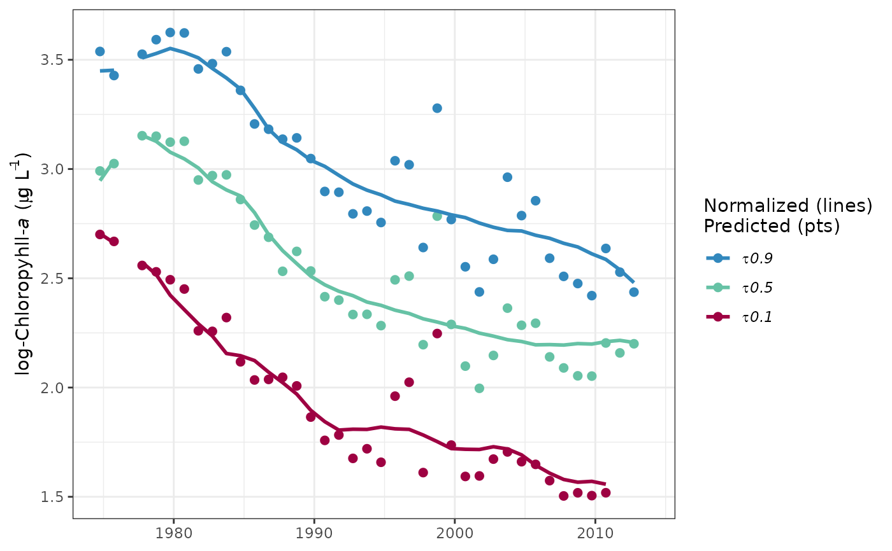
## get the same plot but use default ggplot settings
prdnrmplot(tidfit, pretty = FALSE)
#> Warning: Removed 8 rows containing missing values (`geom_point()`).
#> Warning: Removed 5 rows containing missing values (`geom_line()`).
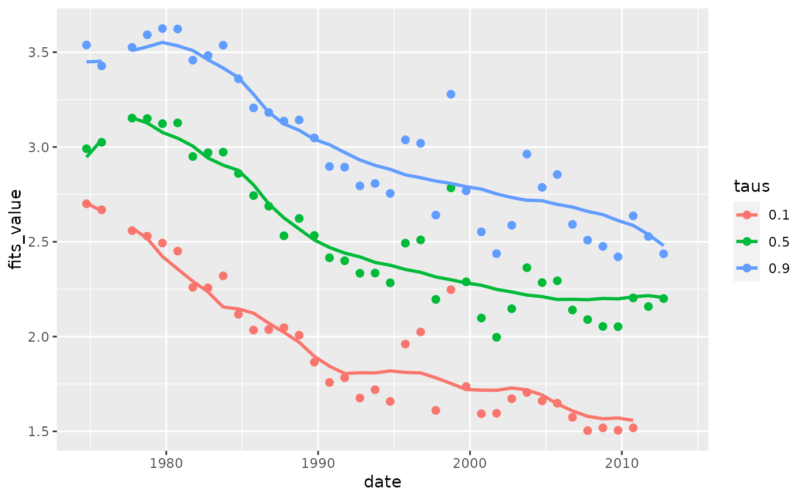
## plot in log space
prdnrmplot(tidfit, logspace = TRUE)
#> Warning: Removed 8 rows containing missing values (`geom_point()`).
#> Warning: Removed 5 rows containing missing values (`geom_line()`).
 ## plot specific quantiles
prdnrmplot(tidfit, tau = c(0.1, 0.9))
#> Warning: Removed 6 rows containing missing values (`geom_point()`).
#> Warning: Removed 4 rows containing missing values (`geom_line()`).
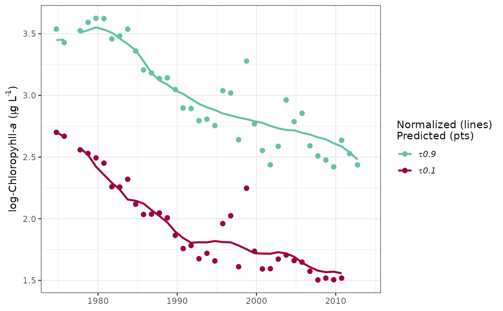
## plot the normalized predictions
prdnrmplot(tidfit, predicted = FALSE)
#> Warning: Removed 8 rows containing missing values (`geom_point()`).
#> Warning: Removed 5 rows containing missing values (`geom_line()`).
## plot specific quantiles
prdnrmplot(tidfit, tau = c(0.1, 0.9))
#> Warning: Removed 6 rows containing missing values (`geom_point()`).
#> Warning: Removed 4 rows containing missing values (`geom_line()`).
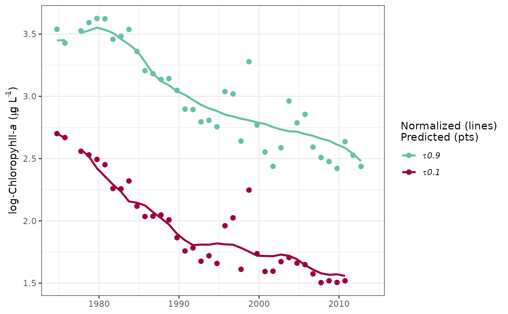
## plot the normalized predictions
prdnrmplot(tidfit, predicted = FALSE)
#> Warning: Removed 8 rows containing missing values (`geom_point()`).
#> Warning: Removed 5 rows containing missing values (`geom_line()`).
 ## plot as monthly values
prdnrmplot(tidfit, annuals = FALSE)
#> Warning: Removed 10 rows containing missing values (`geom_point()`).
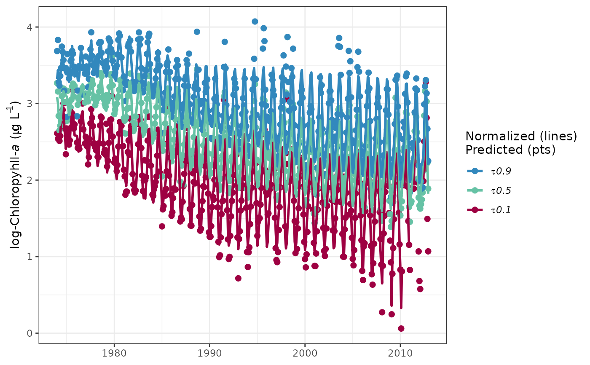
## format the x-axis is using annual aggregations
library(ggplot2)
prdnrmplot(tidfit, annual = TRUE) +
scale_x_date(limits = as.Date(c('2000-01-01', '2012-01-01')))
#> Warning: Removed 85 rows containing missing values (`geom_point()`).
#> Warning: Removed 85 rows containing missing values (`geom_line()`).
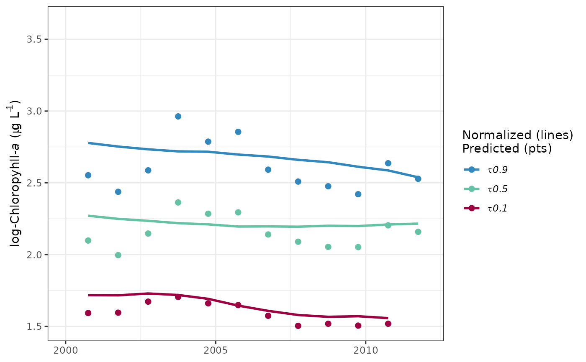
## modify the plot as needed using ggplot scales, etc.
prdnrmplot(tidfit, pretty = FALSE, linetype = 'dashed') +
theme_classic() +
scale_y_continuous(
'Chlorophyll',
limits = c(0, 50)
) +
scale_colour_manual(
'',
labels = c('lo', 'md', 'hi'),
values = c('red', 'green', 'blue'),
guide = guide_legend(reverse = TRUE)
)
#> Warning: Removed 8 rows containing missing values (`geom_point()`).
#> Warning: Removed 5 rows containing missing values (`geom_line()`).
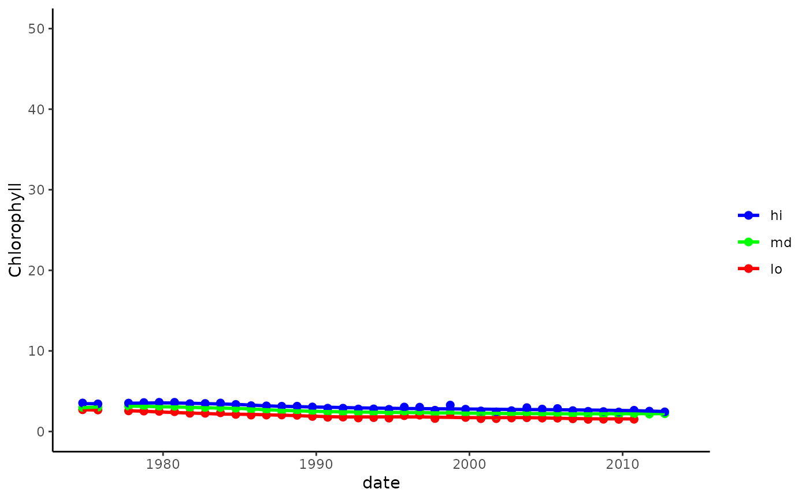
## plot a tidalmean object
data(tidfitmean)
prdnrmplot(tidfitmean)
#> Warning: Removed 2 rows containing missing values (`geom_point()`).
#> Warning: Removed 1 row containing missing values (`geom_line()`).
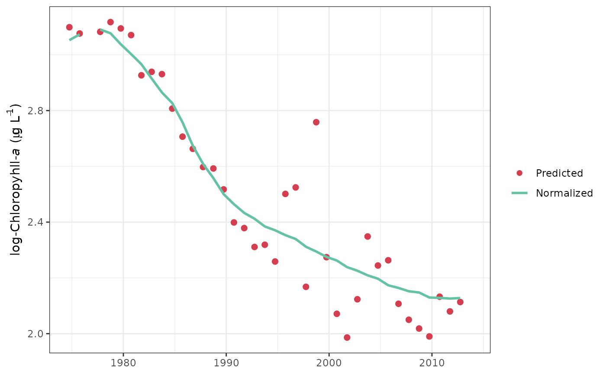
## plot as monthly values
prdnrmplot(tidfit, annuals = FALSE)
#> Warning: Removed 10 rows containing missing values (`geom_point()`).
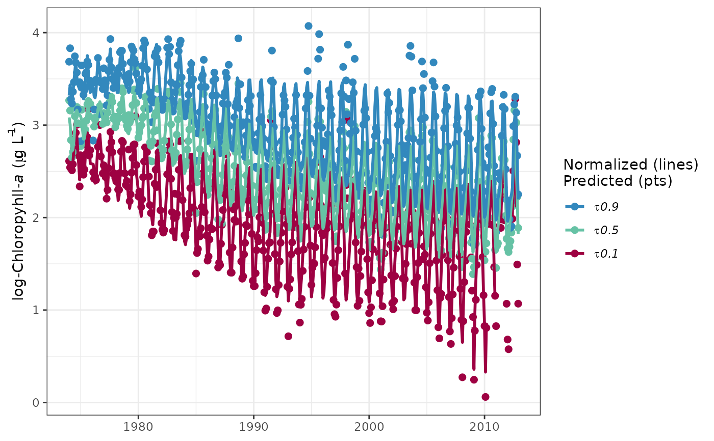
## format the x-axis is using annual aggregations
library(ggplot2)
prdnrmplot(tidfit, annual = TRUE) +
scale_x_date(limits = as.Date(c('2000-01-01', '2012-01-01')))
#> Warning: Removed 85 rows containing missing values (`geom_point()`).
#> Warning: Removed 85 rows containing missing values (`geom_line()`).
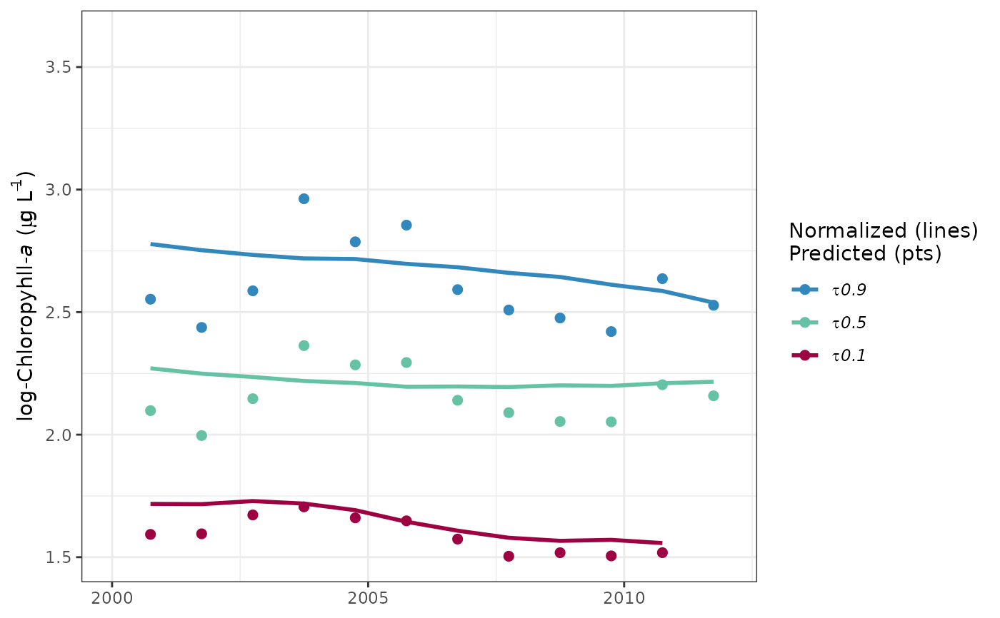
## modify the plot as needed using ggplot scales, etc.
prdnrmplot(tidfit, pretty = FALSE, linetype = 'dashed') +
theme_classic() +
scale_y_continuous(
'Chlorophyll',
limits = c(0, 50)
) +
scale_colour_manual(
'',
labels = c('lo', 'md', 'hi'),
values = c('red', 'green', 'blue'),
guide = guide_legend(reverse = TRUE)
)
#> Warning: Removed 8 rows containing missing values (`geom_point()`).
#> Warning: Removed 5 rows containing missing values (`geom_line()`).
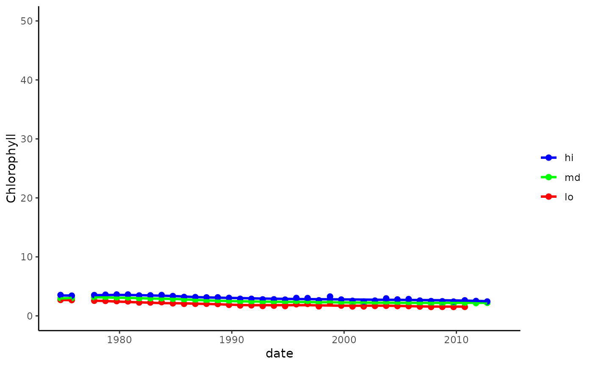
## plot a tidalmean object
data(tidfitmean)
prdnrmplot(tidfitmean)
#> Warning: Removed 2 rows containing missing values (`geom_point()`).
#> Warning: Removed 1 row containing missing values (`geom_line()`).
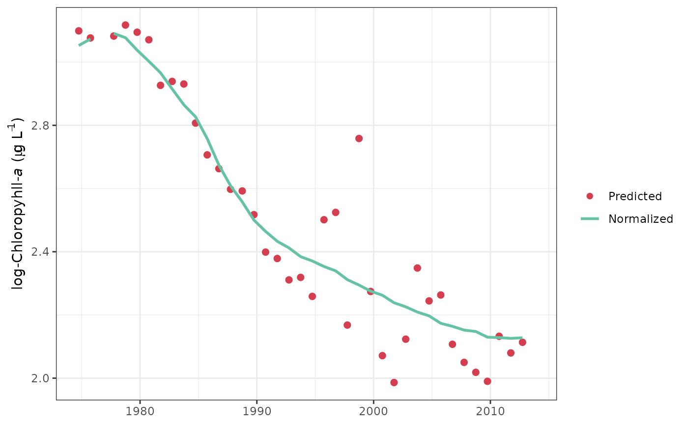